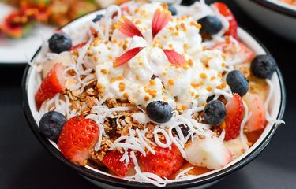
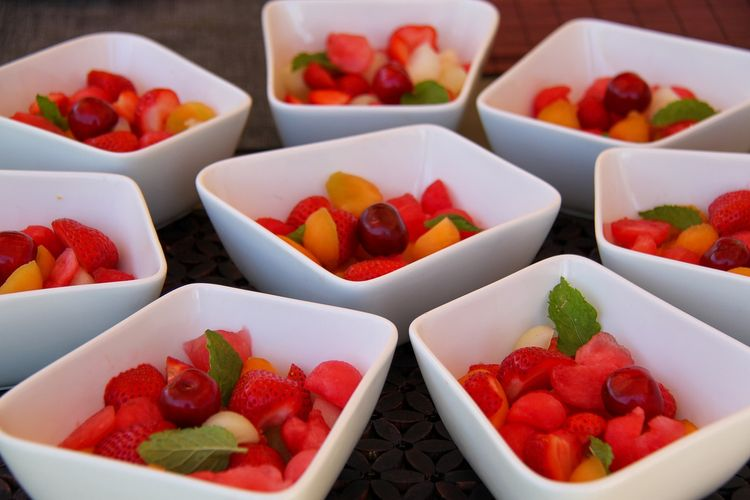

-
Resep Salad Buah Mayones Manis, Segar dan Tidak Bikin Enek
Kamis, 12 Agustus 2021 | 20:08 WIB Ilustrasi salad buah mayones.Editor: Lea Lyliana
KOMPAS.com - Kunci kelezatan salad buah ada pada penggunaan buah segar dan saus dressing-nya.
Jika menyukai cita rasa dressing yang manis, maka kamu dapat membuat salad buah dengan saus mayones manis berikut.
Baca juga: Resep Salad Buah Saus Madu, Dessert Manis yang Mengenyangkan
Racikan saus mayones ini terbuat dari mayones, yoghurt tawar, madu, perasaan jeruk lemon, dan garam.
Penambahan lemon dan garam dapat menyeimbangkan rasanya, sehingga tidak enek saat disantap.
Baca juga: Resep Salad Buah Jelly, Makanan Sehat yang Enak
Dapatkan informasi, inspirasi dan insight di email kamu.
Daftarkan emailBerikut resep salad buah mayones manis dari buku "Hidangan Sehat : Salad" karya Tabularasa terbitan Esensi yang bisa menjadi inspirasi.
Resep salad buah mayones manis
Bahan
- 1 buah naga, kupas lalu potong dadu
- 1 buah mangga gedong atau sesuai selera, kupas lalu potong dadu
- 1 buah apel royal gala, buang tengahnya lalu potong dadu
- 1 cangkir anggur, sekitar 130 gram, belah menjadi dua
- 1 cangkir stoberi, sekitar 130 gram, siangi lalu belahe menjadi dua
Bahan saus
- 1/2 cangkir mayones, sekitar 100 gram
- 120 gram yoghurt tawar
- 4 sdm madu atau susu kental manis
- 1/2 sdm perasan jeruk lemon
- 1/2 sdt garam
 Ilustrasi salad buah.Cara membuat salad buah mayones manis
1. Masukkan semua buah yang sudah dipotong dalam satu mangkuk.
2. Dalam mangkuk lain, tuang semua bahan saus lalu aduk hingga rata. Tuang saus ini ke dalam mangkuk buah, aduk rata. Tutup mangkuk tersebut dengan plastic wrap.
3. Masukkan ke dalam kulkas dan diamkan selama satu jam. Sajikan salad buah selagi dingin.
Baca juga: Resep Salad Buah Campur Agar-agar, Pakai Saus Avokad
Buku "Hidangan Sehat : Salad" karya Tabularasa terbitan Esensi dapat dibeli online di Gramedia.om
Sumber:
TAG:Gramedia.com
resep salad buah mayones
resep dessert untuk jualan
resep dessert sederhana
resep dessert dingin
resep makanan untuk jualan
resep salad buah enak
cara membuat salad buah
bahan membuat salad buah
resep salad buah creamy untuk jualan
Cara membuat saus salad buah
mayonaise untuk salad buah
resep salad buah mayonaise manis
Terkait
Terpopuler
Topik Terpopuler
Komentar
Ada hadiah voucher grab senilai total Rp 6.000.000 dan 1 unit smartphone.
Tulis komentarmu dengan tagar #JernihBerkomentar.
Syarat & KetentuanKolom komentar masih kosongBerkomentarlah secara bijaksana dan bertanggung jawab. Komentar sepenuhnya menjadi tanggung jawab komentator seperti diatur dalam UU ITEkomentar
Terkini
-
Resep Salad Buah dengan Saus Yoghurt Green tea
Resep - 25 menit lalu -
Resep Bubur Kentang Edamame, Menu MPASI Bayi 8 Bulan
Resep - 10 jam lalu -
Resep Peyek Tempe Renyah dengan 2 Langkah Saja
Resep - 10 jam lalu -
Resep Peyek Rebon Teri Renyah dan Tahan Lama
Resep - 11 jam lalu
Artikel yang mungkin Anda lewatkan
Jelajahi